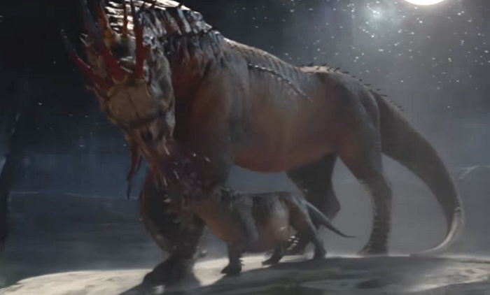

뒤로 가기

유럽의 산악지대에서 발견되는 몸집이 크고 사나운 생물이다.
거대한 말과 같은 외형과 입 주변에 많은 촉수를 가지고 있다.
큰 금빛 뿔 2개와 등에는 커다란 혹, 회색빛이 도는 보라색털을 지니고 있다
간혹 산에 사는 트롤이 그래폰을 타고다니는 것을 볼 수 있지만, 길들여지는 것을 싫어하는 그래폰에 의해 트롤의 온몸이 상처투성이인 경우가 더 많다.
뉴트가 말하길 자신이 보호한 부모 한쌍, 자식 두마리가 유일하게 생존한 개체들이라고 말하는데, 이 말이 사실이라면 뉴트는 사실상 멸종해버린 동물을 복원한 엄청난 일을 해낸거다.